The symmetric group S(n) is group of primary importance. This document presents several representations of this group with RepLAB.
Before trying any of the RepLAB commands, we must initialize the library:
replab_init
Consider 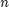 distinct elements, numbered 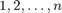. The symmetric group describes all possible ways in which these elements can be permuted.
With 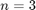, for instance, two possible arrangements are
[1 2 3];
and
[1 3 2];
In general there are 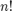 such arrangements (i.e. 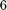 arrangements for ).
In RepLAB, the symmetric group can be constructed with a simple command
n = 3; S3 = replab.S(n);
The elements of the group can be easily listed
S3.elements
ans = Indexed family of 6 elements 1 = [1, 2, 3] 2 = [1, 3, 2] 3 = [2, 1, 3] 4 = [2, 3, 1] 5 = [3, 1, 2] 6 = [3, 2, 1]
The number of elements is the order of the group
S3.order
ans =
6
As we see, permutations are represented by row-vectors with an arrangement of the elements 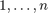.
The group structure defines how elements of the group compose with each other. For instance, permuting the first two elements in 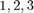, followed by a permutation of the second and third elements results in a cyclic permutation:
element1 = [2 1 3]; element2 = [1 3 2]; S3.compose(element1, element2)
ans =
2 3 1
A group can always be represented by matrices of finite dimension. In a 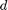-dimensional matrix representation, each group element is associated with a 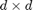 matrix called the image of the group element. The action of matrix multiplication on the images then reflects the group composition rule.
Several matrix representations are possible for the same group, possibly in various dimension . Here, we are going to explore some representations of the group S(3).
When seeing the group as a permutation within elements, a natural choice of representation arises in dimension 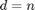, where the permutation is applied to the coordinates of the vector space 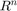. This is called the defining representation of a group. It can be constructed easily:
defRep = S3.definingRep;
The image of a group element in this representation can be extracted
defRep.image([2 1 3])
ans =
0 1 0
1 0 0
0 0 1
We see that the matrices representing the group elements are 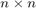 permutation matrices, which simply apply the permutation to the coordinates of the vector space .
For a representation to be valid, the images must follow the structure of the group:
image1 = defRep.image(element1); image2 = defRep.image(element2); image1*image2 defRep.image(S3.compose(element1, element2))
ans =
0 0 1
1 0 0
0 1 0
ans =
0 0 1
1 0 0
0 1 0
We see that the image of the product of elements is indeed the product of the images of the respective elements, i.e. the algebra of matrices acting on the representation images accurately reflects the group algebra.
It can be checked, moreover, that the defining representation is faithful, i.e. each group element has its own distinct image. This needs not always be the case as in the following two examples.
To construct an arbitrary group representation in RepLAB, it is sufficient to provide the image of the generators of the group. The group S(3) has two generators:
generators = S3.generators;
generators{:}
ans =
2 3 1
ans =
2 1 3
Let us construct a representation of this group in dimension
d = 1;
associating the each generator its parity (i.e. either 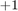 or 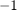). Since the parity of [2 3 1] is 1 and the parity of [2 1 3] is -1, this is achieved by instantiating the class RepByImage as follows:
parRep = replab.RepByImages(S3, 'R', d, true, {1 -1});
We can check that this representation is valid
image1 = parRep.image(element1) image2 = parRep.image(element2) image1*image2 parRep.image(S3.compose(element1, element2))
image1 =
-1
image2 =
-1
ans =
1
ans =
1
The parity of each binary permutation [2 1 3] and [1 3 2] is , and their product, the cycle [2 3 1], has parity 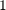.
Clearly, this representation carries some information about the group, namely the parity, but some elements have the same image:
allElements = S3.elements.toCell; for i = 1:length(allElements) disp(['Image of [', num2str(allElements{i}), '] : ', num2str(parRep.image(allElements{i}))]); end
Image of [1 2 3] : 1 Image of [1 3 2] : -1 Image of [2 1 3] : -1 Image of [2 3 1] : 1 Image of [3 1 2] : 1 Image of [3 2 1] : -1
Therefore, this representation is not faithful.
An even simpler representation of the group S(n) is one in which the image of all elements is set to . This is called the trivial representation.
It can be constructed similarly from the image of the generators:
trivRep = replab.RepByImages(S3, 'R', d, true, {1 1});
This time, the group law is trivially satisfied since all images are indeed equal to :
for i = 1:length(allElements) disp(['Image of [', num2str(allElements{i}), '] : ', num2str(trivRep.image(allElements{i}))]); end
Image of [1 2 3] : 1 Image of [1 3 2] : 1 Image of [2 1 3] : 1 Image of [2 3 1] : 1 Image of [3 1 2] : 1 Image of [3 2 1] : 1
We have seen that a group can admit several representations. Any two representations of a group in dimension 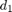 and 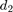 can be joined together by taking their direct sum in order to create a new valid representation in dimension 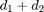.
For instance, we can construct a 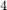-dimensional representation of S(3) by taking the direct sum of the defining representation with the parity representation
newRep = replab.Rep.directSum({defRep, parRep});
The images are then 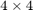 matrices
newRep.image(element1) newRep.image(element2)
ans =
0 1 0 0
1 0 0 0
0 0 1 0
0 0 0 -1
ans =
1 0 0 0
0 0 1 0
0 1 0 0
0 0 0 -1
As expected, the images have a block diagonal structure. The properties of a direct sum representation are thus captured by the properties of the representation in each block. Such a representation is reducible.
Given a representation, it is not always obvious whether it is the direct sum of more fundamental representations or if the representation is irreducible. For instance, the images of the defining representation introduced above are not obviously block-diagonal. Yet, this representation is also reducible. To see this, one needs to find a basis of the vector space 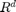 in which the images have a block diagonal structure.
This can be achieved in RepLAB by decomposing the representation
defDec = defRep.decomposition; defDec.nComponents
ans =
2
This shows that the defininig representation of S(3) has two irreducible components, of dimension and 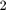 respectively:
defDec.component(1).irrepDimension defDec.component(2).irrepDimension
ans =
1
ans =
2
The decomposition also provides the change of basis matrix which makes this decomposition apparent
U = full(defDec.U)
U =
0.5774 0.5774 0.5774
0.8165 -0.4082 -0.4082
0 0.7071 -0.7071
The images of the two elements of S(3), [2 1 3] and [1 3 2] are indeed block-diagonal in this basis:
U*defRep.image(element1)*U' U*defRep.image(element2)*U'
ans =
1.0000 -0.0000 -0.0000
-0.0000 -0.5000 0.8660
-0.0000 0.8660 0.5000
ans =
1.0000 -0.0000 -0.0000
-0.0000 1.0000 -0.0000
0.0000 0.0000 -1.0000
This shows that the defining representation of S(3) contains